One script. 178 brands.
Attackers slipped code into Optimizely, a website testing tool, and it skimmed cards on big brands' checkouts for most of a day.
Optimizely Web customers: malicious code ran on 178 brands' websites for most of 16 November.
VMware vCenter users: China-linked spies held admin access for two months before a patch landed.
Rakuten Securities: up to 15.72 million accounts leaked from a test server holding real data.
28 companies paid $40.5M to a gang that phoned staff pretending to be IT support.
Every big story this week was a trusted thing doing untrusted work. A marketing script on a checkout page. A test server full of real customers. A package from Microsoft. A phone call from IT. If I had one hour on Monday, I'd list what we trust by default and ask who would notice if it changed.
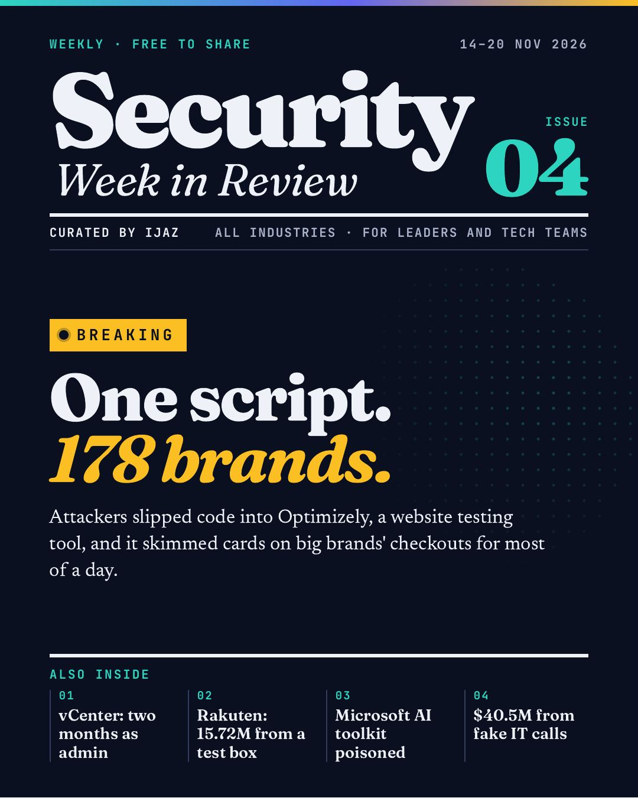
Read this page as text
WEEKLY · FREE TO SHARE
14–20 NOV 2026
Security Week in Review 04 ISSUE
CURATED BY IJAZ
ALL INDUSTRIES · FOR LEADERS AND TECH TEAMS
BREAKING
One script. 178 brands.
Attackers slipped code into Optimizely, a website testing tool, and it skimmed cards on big brands' checkouts for most of a day.
ALSO INSIDE 01
vCenter: two months as admin
Rakuten: 15.72M from a test box
Microsoft AI toolkit poisoned
$40.5M from fake IT calls
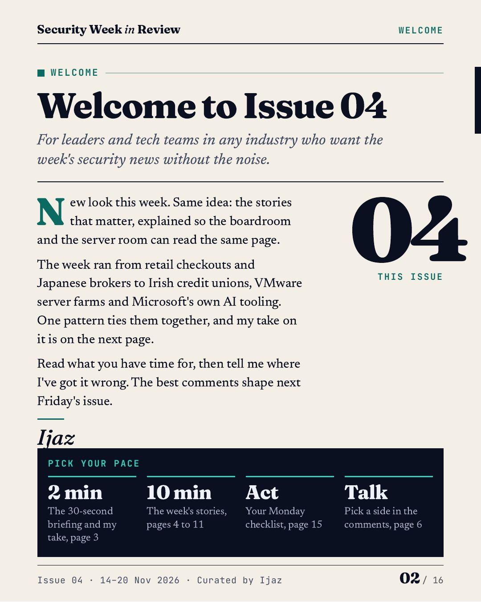
Read this page as text
Security Week in Review
WELCOME
WELCOME
Welcome to Issue 04 For leaders and tech teams in any industry who want the week's security news without the noise.
N
ew look this week. Same idea: the stories that matter, explained so the boardroom and the server room can read the same page. The week ran from retail checkouts and Japanese brokers to Irish credit unions, VMware server farms and Microsoft's own AI tooling. One pattern ties them together, and my take on it is on the next page.
04 THIS ISSUE
Read what you have time for, then tell me where I've got it wrong. The best comments shape next Friday's issue.
Ijaz PICK YOUR PACE
2 min
The 30-second briefing and my take, page 3
10 min
The week's stories, pages 4 to 11
Act
Your Monday checklist, page 15
Issue 04 · 14–20 Nov 2026 · Curated by Ijaz
Talk
Pick a side in the comments, page 6
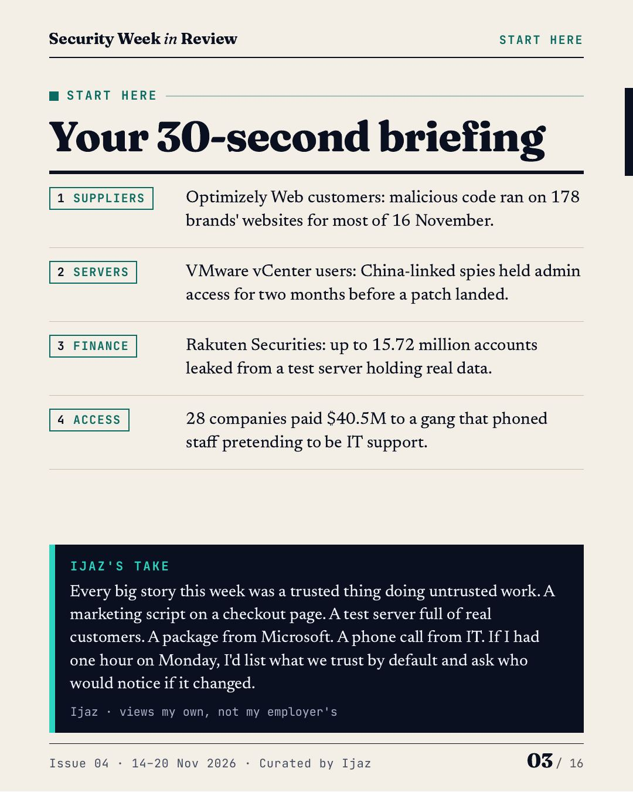
Read this page as text
Security Week in Review
START HERE
START HERE
Your 30-second briefing 1 SUPPLIERS
Optimizely Web customers: malicious code ran on 178 brands' websites for most of 16 November.
2 SERVERS
VMware vCenter users: China-linked spies held admin access for two months before a patch landed.
3 FINANCE
Rakuten Securities: up to 15.72 million accounts leaked from a test server holding real data.
4 ACCESS
28 companies paid $40.5M to a gang that phoned staff pretending to be IT support.
IJAZ'S TAKE
Every big story this week was a trusted thing doing untrusted work. A marketing script on a checkout page. A test server full of real customers. A package from Microsoft. A phone call from IT. If I had one hour on Monday, I'd list what we trust by default and ask who would notice if it changed. Ijaz · views my own, not my employer's
Issue 04 · 14–20 Nov 2026 · Curated by Ijaz
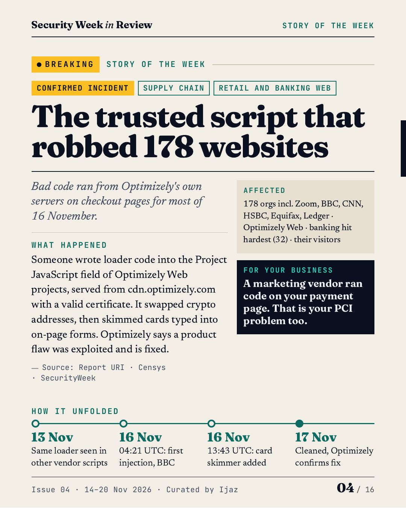
Read this page as text
Security Week in Review
BREAKING
STORY OF THE WEEK
STORY OF THE WEEK
CONFIRMED INCIDENT
SUPPLY CHAIN
RETAIL AND BANKING WEB
The trusted script that robbed 178 websites Bad code ran from Optimizely's own servers on checkout pages for most of 16 November.
AFFECTED
178 orgs incl. Zoom, BBC, CNN, HSBC, Equifax, Ledger · Optimizely Web · banking hit hardest (32) · their visitors
WHAT HAPPENED
Someone wrote loader code into the Project JavaScript field of Optimizely Web projects, served from cdn.optimizely.com with a valid certificate. It swapped crypto addresses, then skimmed cards typed into on-page forms. Optimizely says a product flaw was exploited and is fixed.
FOR YOUR BUSINESS
A marketing vendor ran code on your payment page. That is your PCI problem too.
Source: Report URI · Censys · SecurityWeek
HOW IT UNFOLDED
13 Nov
Same loader seen in other vendor scripts
16 Nov
04:21 UTC: first injection, BBC
16 Nov
13:43 UTC: card skimmer added
Issue 04 · 14–20 Nov 2026 · Curated by Ijaz
17 Nov
Cleaned, Optimizely confirms fix
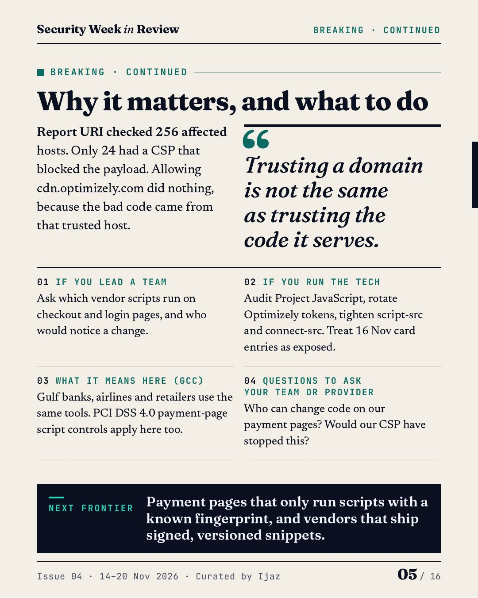
Read this page as text
Security Week in Review
BREAKING · CONTINUED
BREAKING · CONTINUED
Why it matters, and what to do Report URI checked 256 affected hosts. Only 24 had a CSP that blocked the payload. Allowing cdn.optimizely.com did nothing, because the bad code came from that trusted host.
“ Trusting a domain
01 IF YOU LEAD A TEAM
02 IF YOU RUN THE TECH
Ask which vendor scripts run on checkout and login pages, and who would notice a change.
Audit Project JavaScript, rotate Optimizely tokens, tighten script-src and connect-src. Treat 16 Nov card entries as exposed.
03 WHAT IT MEANS HERE ( GCC)
04 QUESTIONS TO ASK YOUR TEAM OR PROVIDER
is not the same as trusting the code it serves.
Gulf banks, airlines and retailers use the same tools. PCI DSS 4.0 payment-page Who can change code on our payment pages? Would our CSP have script controls apply here too. stopped this?
NEXT FRONTIER
Payment pages that only run scripts with a known fingerprint, and vendors that ship signed, versioned snippets.
Issue 04 · 14–20 Nov 2026 · Curated by Ijaz
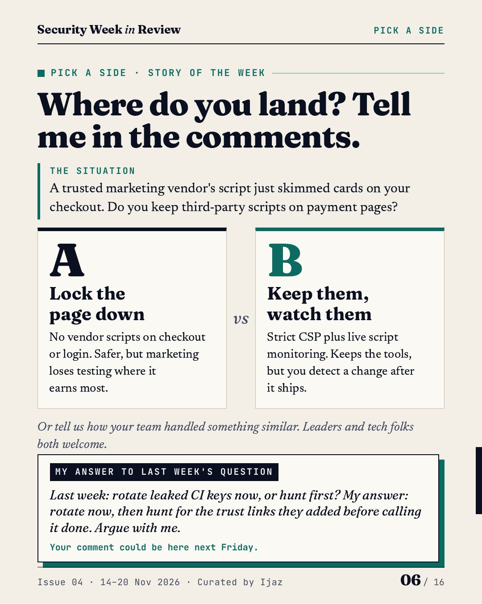
Read this page as text
Security Week in Review
PICK A SIDE
PICK A SIDE · STORY OF THE WEEK
Where do you land? Tell me in the comments. THE SITUATION
A trusted marketing vendor's script just skimmed cards on your checkout. Do you keep third-party scripts on payment pages?
A
Lock the page down No vendor scripts on checkout or login. Safer, but marketing loses testing where it earns most.
B vs
Keep them, watch them Strict CSP plus live script monitoring. Keeps the tools, but you detect a change after it ships.
Or tell us how your team handled something similar. Leaders and tech folks both welcome. MY ANSWER TO LAST WEEK'S QUESTION
Last week: rotate leaked CI keys now, or hunt first? My answer: rotate now, then hunt for the trust links they added before calling it done. Argue with me. Your comment could be here next Friday.
Issue 04 · 14–20 Nov 2026 · Curated by Ijaz
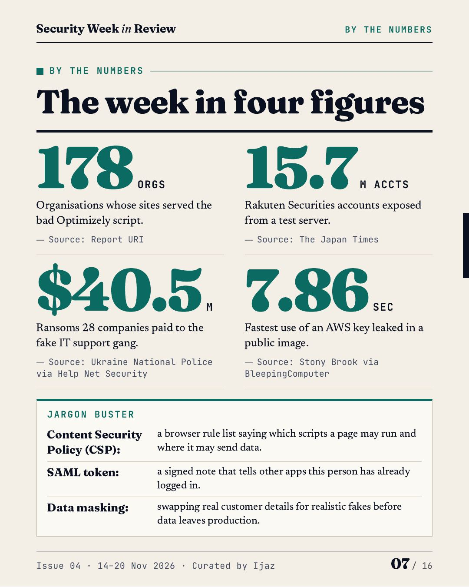
Read this page as text
Security Week in Review
BY THE NUMBERS
BY THE NUMBERS
The week in four figures
ORGS
Organisations whose sites served the bad Optimizely script. Source: Report URI
15.7
M ACCTS
Rakuten Securities accounts exposed from a test server. Source: The Japan Times
$40.5 7.86 M
SEC
Ransoms 28 companies paid to the fake IT support gang.
Fastest use of an AWS key leaked in a public image.
Source: Ukraine National Police via Help Net Security
Source: Stony Brook via BleepingComputer
JARGON BUSTER
Content Security Policy (CSP):
a browser rule list saying which scripts a page may run and where it may send data.
SAML token:
a signed note that tells other apps this person has already logged in.
Data masking:
swapping real customer details for realistic fakes before data leaves production.
Issue 04 · 14–20 Nov 2026 · Curated by Ijaz
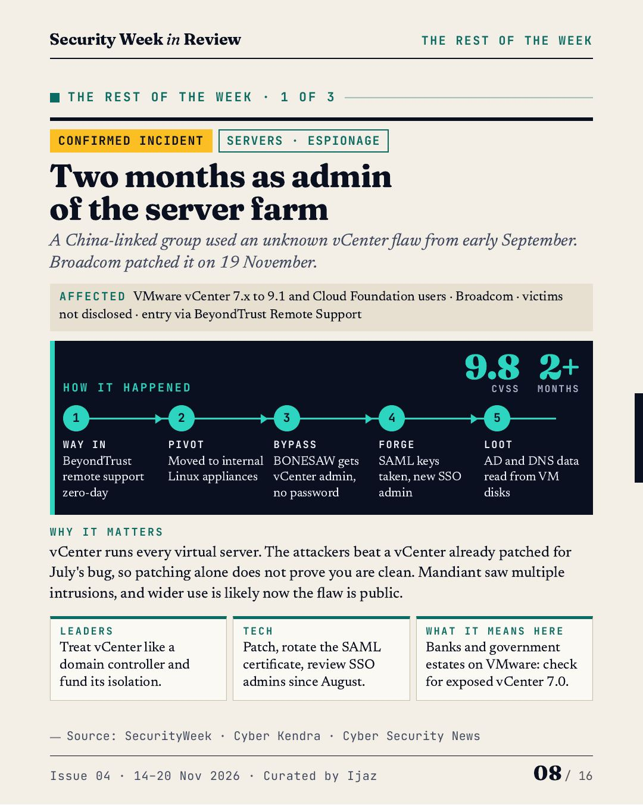
Read this page as text
Security Week in Review
THE REST OF THE WEEK
THE REST OF THE WEEK · 1 OF 3 CONFIRMED INCIDENT
SERVERS · ESPIONAGE
Two months as admin of the server farm
A China-linked group used an unknown vCenter flaw from early September. Broadcom patched it on 19 November. A F F E C T E D VMware vCenter 7.x to 9.1 and Cloud Foundation users · Broadcom · victims
not disclosed · entry via BeyondTrust Remote Support
9.8 2+
HOW IT HAPPENED
CVSS
WAY IN
PIVOT
BYPASS
BeyondTrust remote support zero-day
Moved to internal BONESAW gets Linux appliances vCenter admin, no password
MONTHS
FORGE
LOOT
SAML keys taken, new SSO admin
AD and DNS data read from VM disks
WHY IT MATTERS
vCenter runs every virtual server. The attackers beat a vCenter already patched for July's bug, so patching alone does not prove you are clean. Mandiant saw multiple intrusions, and wider use is likely now the flaw is public. LEADERS
TECH
WHAT IT MEANS HERE
Treat vCenter like a domain controller and fund its isolation.
Patch, rotate the SAML certificate, review SSO admins since August.
Banks and government estates on VMware: check for exposed vCenter 7.0.
Source: SecurityWeek · Cyber Kendra · Cyber Security News Issue 04 · 14–20 Nov 2026 · Curated by Ijaz
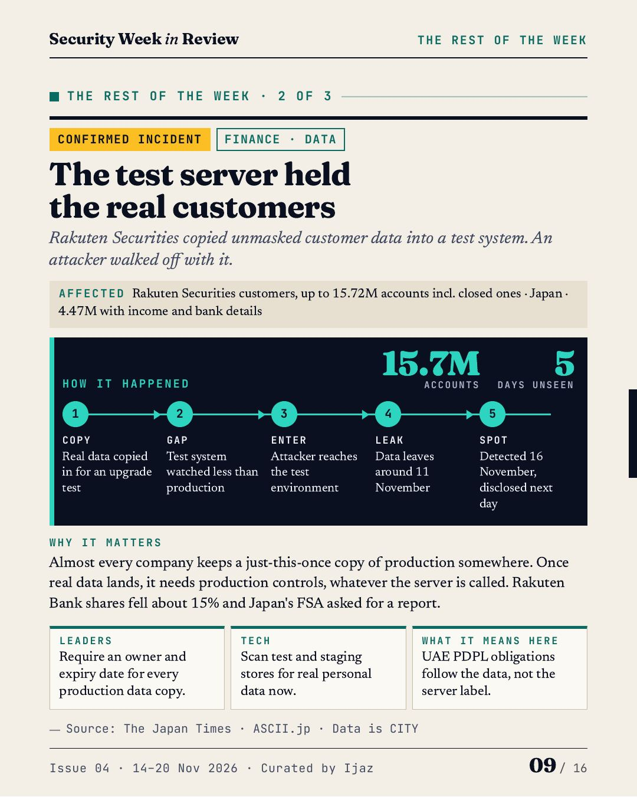
Read this page as text
Security Week in Review
THE REST OF THE WEEK
THE REST OF THE WEEK · 2 OF 3 CONFIRMED INCIDENT
FINANCE · DATA
The test server held the real customers
Rakuten Securities copied unmasked customer data into a test system. An attacker walked off with it. A F F E C T E D Rakuten Securities customers, up to 15.72M accounts incl. closed ones · Japan ·
4.47M with income and bank details
15.7M
HOW IT HAPPENED
ACCOUNTS
DAYS UNSEEN
COPY
GAP
ENTER
LEAK
SPOT
Real data copied in for an upgrade test
Test system Attacker reaches watched less than the test production environment
Data leaves around 11 November
Detected 16 November, disclosed next day
WHY IT MATTERS
Almost every company keeps a just-this-once copy of production somewhere. Once real data lands, it needs production controls, whatever the server is called. Rakuten Bank shares fell about 15% and Japan's FSA asked for a report. LEADERS
TECH
WHAT IT MEANS HERE
Require an owner and expiry date for every production data copy.
Scan test and staging stores for real personal data now.
UAE PDPL obligations follow the data, not the server label.
Source: The Japan Times · ASCII.jp · Data is CITY Issue 04 · 14–20 Nov 2026 · Curated by Ijaz
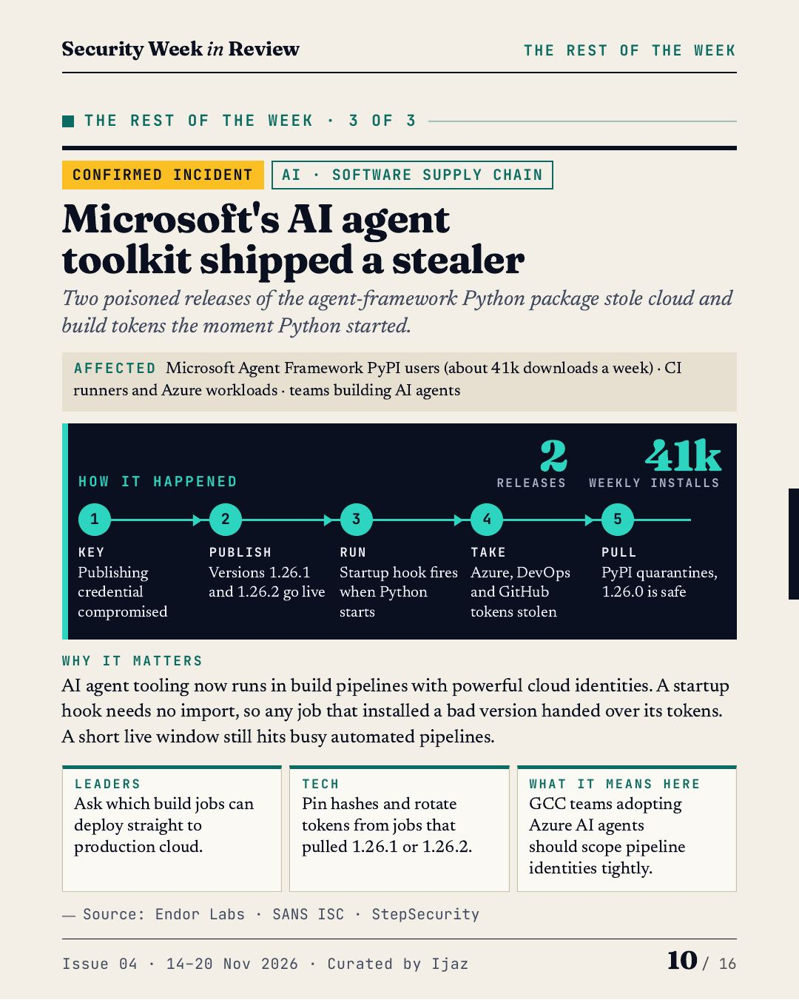
Read this page as text
Security Week in Review
THE REST OF THE WEEK
THE REST OF THE WEEK · 3 OF 3 CONFIRMED INCIDENT
AI · SOFTWARE SUPPLY CHAIN
Microsoft's AI agent toolkit shipped a stealer
Two poisoned releases of the agent-framework Python package stole cloud and build tokens the moment Python started. A F F E C T E D Microsoft Agent Framework PyPI users (about 41k downloads a week) · CI
runners and Azure workloads · teams building AI agents
HOW IT HAPPENED
RELEASES
41k
WEEKLY INSTALLS
RUN
TAKE
PULL
KEY
PUBLISH
Publishing credential compromised
Versions 1.26.1 Startup hook fires Azure, DevOps and 1.26.2 go live when Python and GitHub starts tokens stolen
PyPI quarantines, 1.26.0 is safe
WHY IT MATTERS
AI agent tooling now runs in build pipelines with powerful cloud identities. A startup hook needs no import, so any job that installed a bad version handed over its tokens. A short live window still hits busy automated pipelines. LEADERS
TECH
WHAT IT MEANS HERE
Ask which build jobs can deploy straight to production cloud.
Pin hashes and rotate tokens from jobs that pulled 1.26.1 or 1.26.2.
GCC teams adopting Azure AI agents should scope pipeline identities tightly.
Source: Endor Labs · SANS ISC · StepSecurity Issue 04 · 14–20 Nov 2026 · Curated by Ijaz
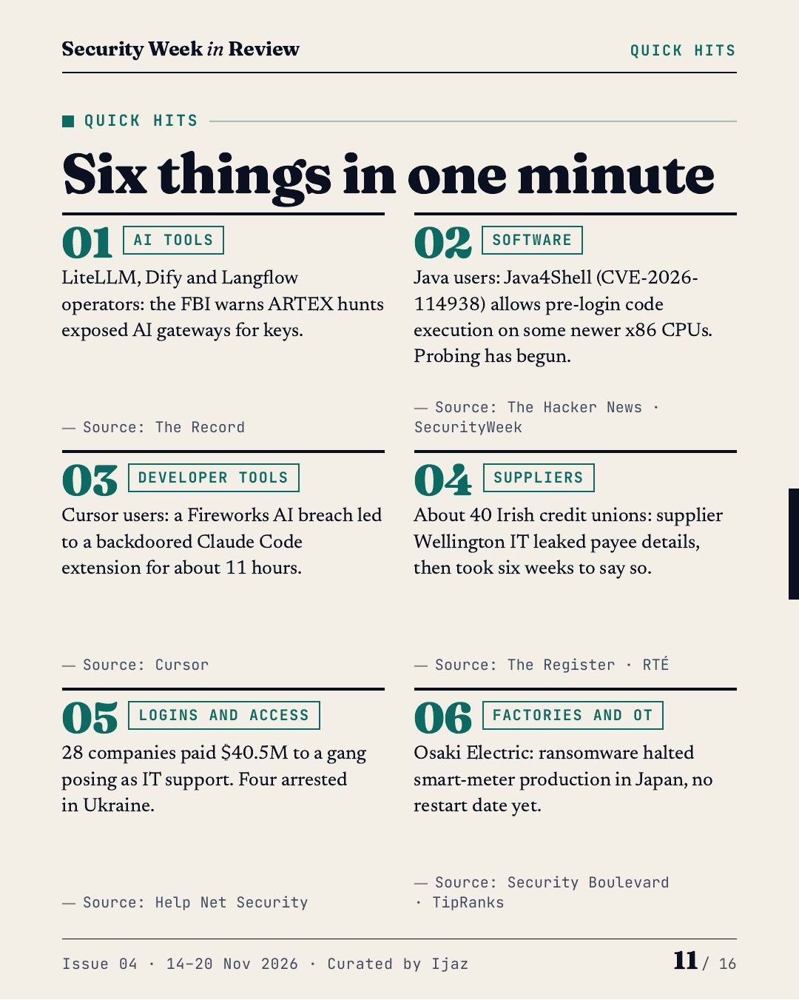
Read this page as text
Security Week in Review
QUICK HITS
QUICK HITS
Six things in one minute 01
AI TOOLS
LiteLLM, Dify and Langflow operators: the FBI warns ARTEX hunts exposed AI gateways for keys.
Source: The Record
DEVELOPER TOOLS
Cursor users: a Fireworks AI breach led to a backdoored Claude Code extension for about 11 hours.
Source: Cursor
LOGINS AND ACCESS
28 companies paid $40.5M to a gang posing as IT support. Four arrested in Ukraine.
Source: Help Net Security
SOFTWARE
Java users: Java4Shell (CVE-2026114938) allows pre-login code execution on some newer x86 CPUs. Probing has begun. Source: The Hacker News · SecurityWeek
SUPPLIERS
About 40 Irish credit unions: supplier Wellington IT leaked payee details, then took six weeks to say so.
Source: The Register · RTÉ
FACTORIES AND OT
Osaki Electric: ransomware halted smart-meter production in Japan, no restart date yet.
Source: Security Boulevard · TipRanks
Issue 04 · 14–20 Nov 2026 · Curated by Ijaz
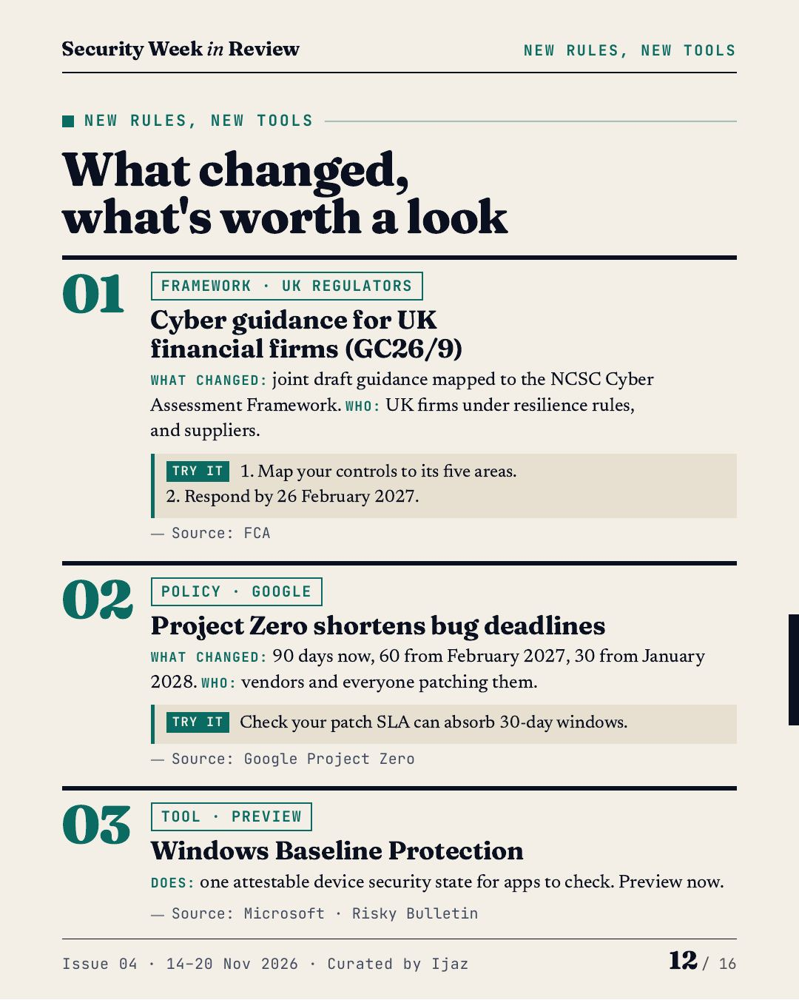
Read this page as text
Security Week in Review
NEW RULES, NEW TOOLS
NEW RULES, NEW TOOLS
What changed, what's worth a look
01 Cyber guidance for UK FRAMEWORK · UK REGULATORS
financial firms (GC26/9) WHAT CHANGED: joint draft guidance mapped to the NCSC Cyber
Assessment Framework. WHO: UK firms under resilience rules, and suppliers. 1. Map your controls to its five areas. 2. Respond by 26 February 2027. TRY IT
Source: FCA
02 Project Zero shortens bug deadlines POLICY · GOOGLE
WHAT CHANGED: 90 days now, 60 from February 2027, 30 from January
2028. WHO: vendors and everyone patching them. TRY IT
Check your patch SLA can absorb 30-day windows.
Source: Google Project Zero
03 Windows Baseline Protection TOOL · PREVIEW
DOES: one attestable device security state for apps to check. Preview now.
Source: Microsoft · Risky Bulletin Issue 04 · 14–20 Nov 2026 · Curated by Ijaz
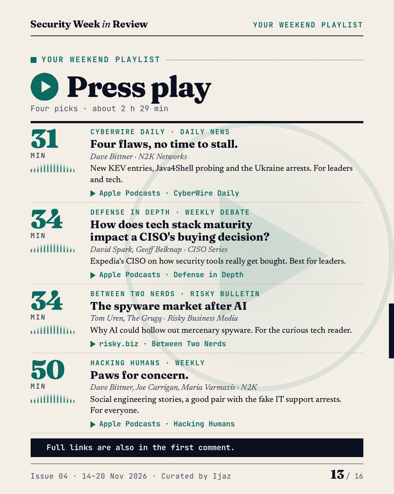
Read this page as text
Security Week in Review
YOUR WEEKEND PLAYLIST
YOUR WEEKEND PLAYLIST
Press play
Four picks · about 2 h 29 min
31 MIN
CYBERWIRE DAILY · DAILY NEWS
Four flaws, no time to stall.
Dave Bittner · N2K Networks New KEV entries, Java4Shell probing and the Ukraine arrests. For leaders and tech. Apple Podcasts · CyberWire Daily
34 MIN
DEFENSE IN DEPTH · WEEKLY DEBATE
How does tech stack maturity impact a CISO's buying decision?
David Spark, Geoff Belknap · CISO Series Expedia's CISO on how security tools really get bought. Best for leaders. Apple Podcasts · Defense in Depth
34 MIN
BETWEEN TWO NERDS · RISKY BULLETIN
The spyware market after AI
Tom Uren, The Grugq · Risky Business Media Why AI could hollow out mercenary spyware. For the curious tech reader. risky.biz · Between Two Nerds
50 MIN
HACKING HUMANS · WEEKLY
Paws for concern.
Dave Bittner, Joe Carrigan, Maria Varmazis · N2K Social engineering stories, a good pair with the fake IT support arrests. For everyone. Apple Podcasts · Hacking Humans
Full links are also in the first comment. Issue 04 · 14–20 Nov 2026 · Curated by Ijaz
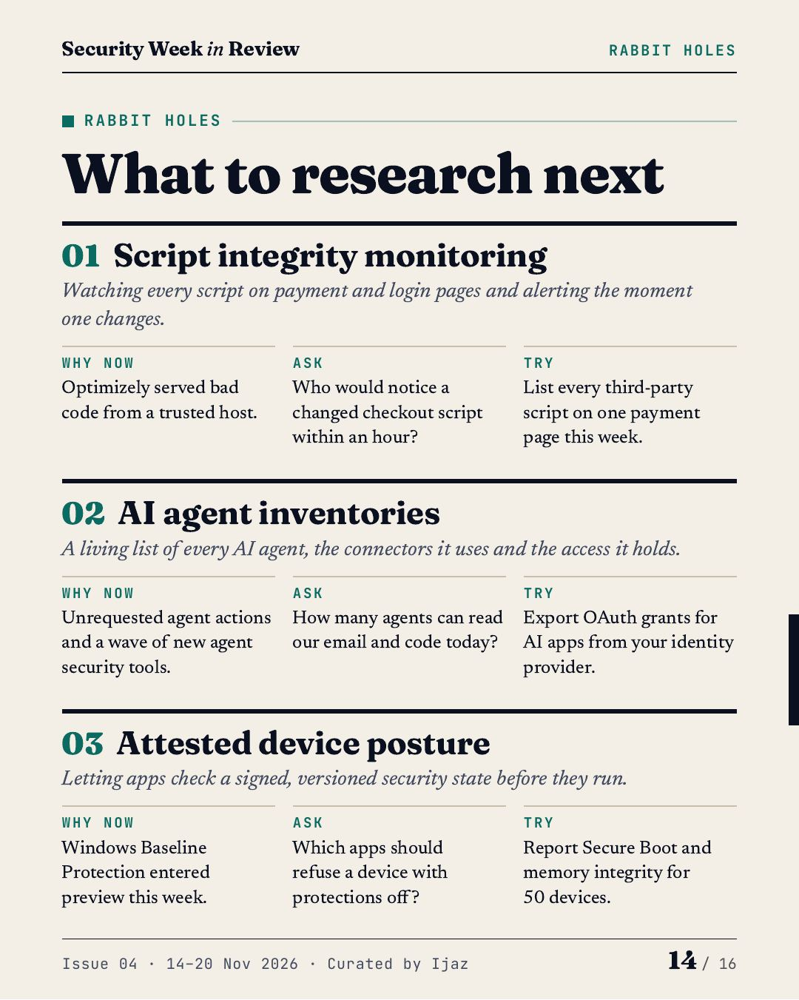
Read this page as text
Security Week in Review
RABBIT HOLES
RABBIT HOLES
What to research next 01 Script integrity monitoring
Watching every script on payment and login pages and alerting the moment one changes. WHY NOW
ASK
TRY
Optimizely served bad code from a trusted host.
Who would notice a changed checkout script within an hour?
List every third-party script on one payment page this week.
02 AI agent inventories
A living list of every AI agent, the connectors it uses and the access it holds. WHY NOW
ASK
TRY
Unrequested agent actions and a wave of new agent security tools.
How many agents can read our email and code today?
Export OAuth grants for AI apps from your identity provider.
03 Attested device posture
Letting apps check a signed, versioned security state before they run. WHY NOW
ASK
TRY
Windows Baseline Protection entered preview this week.
Which apps should refuse a device with protections off ?
Report Secure Boot and memory integrity for 50 devices.
Issue 04 · 14–20 Nov 2026 · Curated by Ijaz
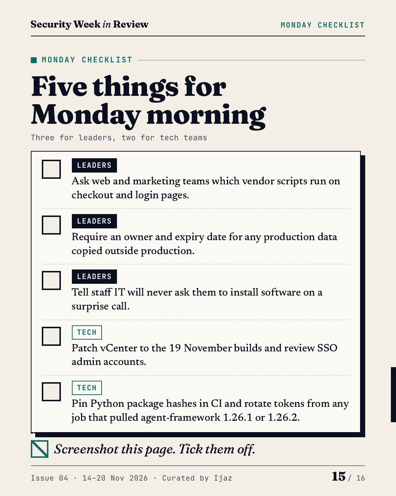
Read this page as text
Security Week in Review
MONDAY CHECKLIST
MONDAY CHECKLIST
Five things for Monday morning Three for leaders, two for tech teams LEADERS
Ask web and marketing teams which vendor scripts run on checkout and login pages. LEADERS
Require an owner and expiry date for any production data copied outside production. LEADERS
Tell staff IT will never ask them to install software on a surprise call. TECH
Patch vCenter to the 19 November builds and review SSO admin accounts. TECH
Pin Python package hashes in CI and rotate tokens from any job that pulled agent-framework 1.26.1 or 1.26.2.
Screenshot this page. Tick them off. Issue 04 · 14–20 Nov 2026 · Curated by Ijaz
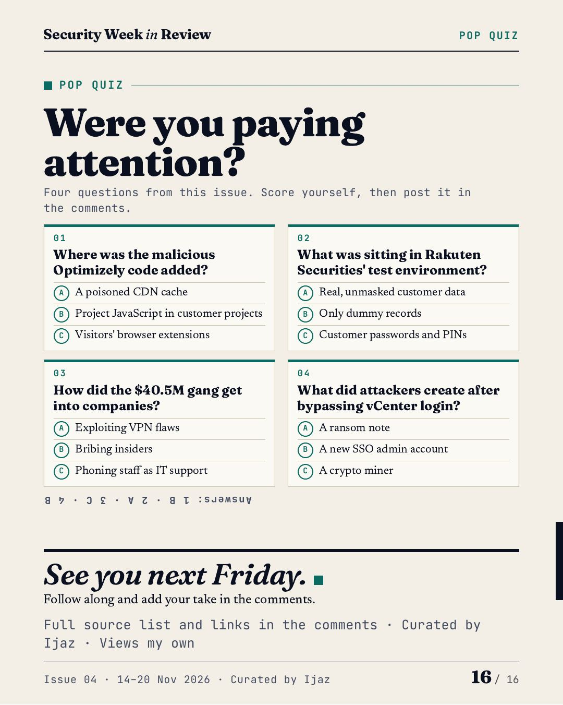
Read this page as text
Security Week in Review
POP QUIZ
POP QUIZ
Were you paying attention?
Four questions from this issue. Score yourself, then post it in the comments. 01
Where was the malicious Optimizely code added?
What was sitting in Rakuten Securities' test environment?
A
A poisoned CDN cache
A
Real, unmasked customer data
B
Project JavaScript in customer projects
B
Only dummy records
C
Visitors' browser extensions
C
Customer passwords and PINs
How did the $40.5M gang get into companies?
What did attackers create after bypassing vCenter login?
A
Exploiting VPN flaws
A
A ransom note
B
Bribing insiders
B
A new SSO admin account
C
Phoning staff as IT support
C
A crypto miner
Answers: 1 B · 2 A · 3 C · 4 B
See you next Friday.
Follow along and add your take in the comments. Full source list and links in the comments · Curated by Ijaz · Views my own Issue 04 · 14–20 Nov 2026 · Curated by Ijaz